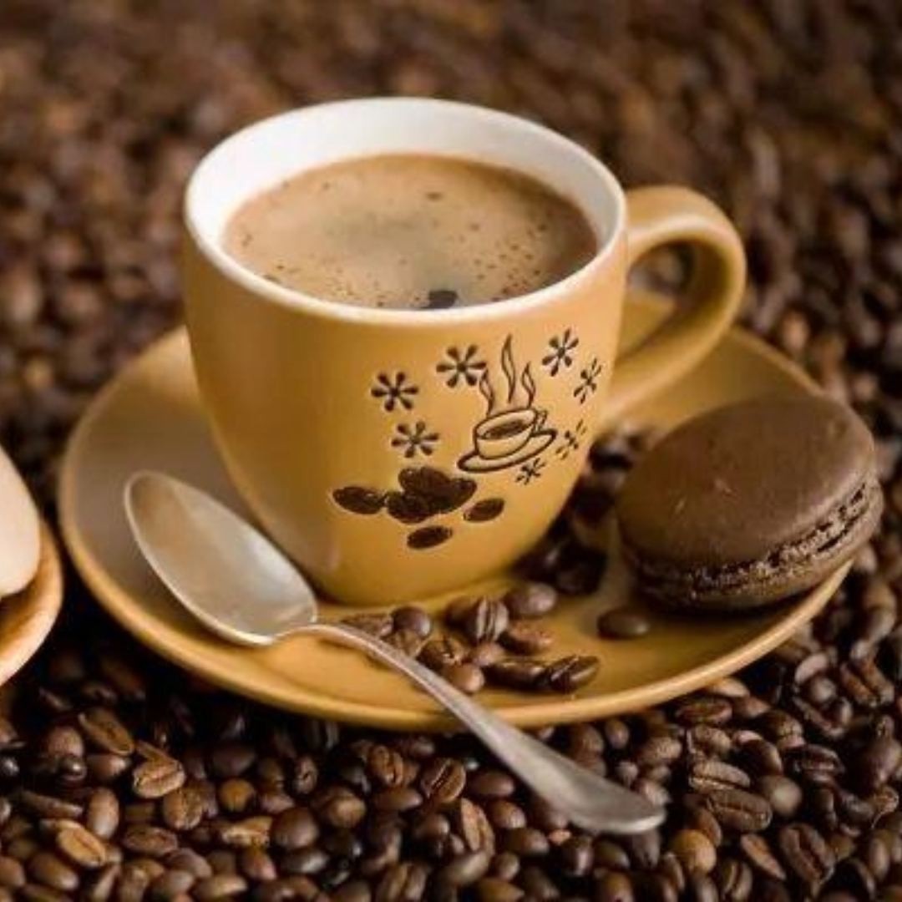
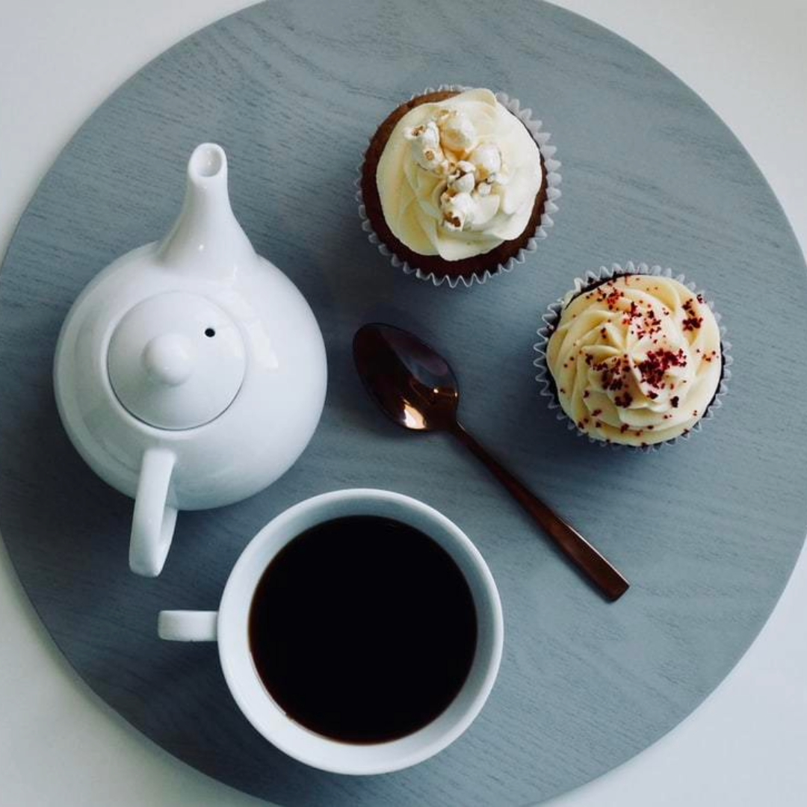
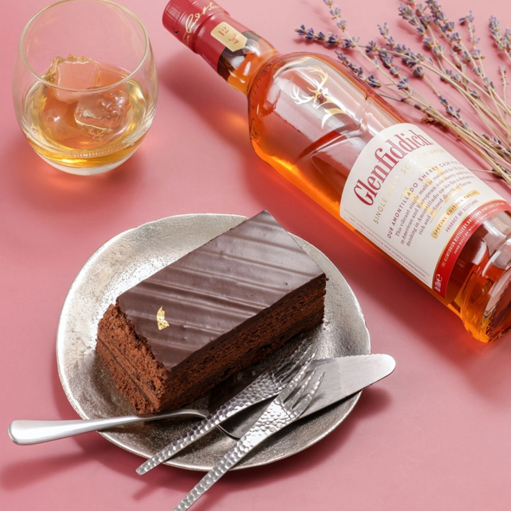
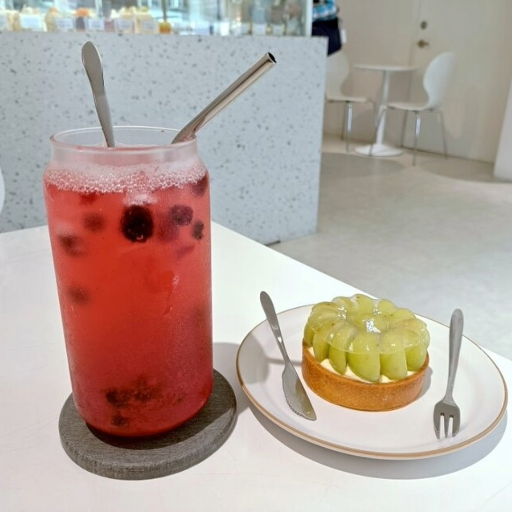

飲品大集合
吃甜點配甚麼?

咖啡
咖啡的苦澀和香氣能夠平衡甜點的甜度，形成一種完美的味覺搭配，其質地和甜點的蛋糕、餅乾等固體食物形成有趣的口感對比。

茶類
茶的清淡和香氣有助於平衡甜點的甜味，且提供口感上的和諧輕盈口感有助於中和甜點的油膩感，帶來清爽的感受。

酒類
酒與甜點的搭配可以帶來味覺上的升華，甜點的甜味和酒的酸度或單寧可以產生對比效果，平衡彼此的風味，使味蕾更加敏感。

氣泡飲
氣泡飲料的氣泡能夠在口中爆破，帶來更多層次的口感，提升整體的飲食體驗。不同口味的氣泡飲料搭配不同風味的甜點，滿足各種口味需求